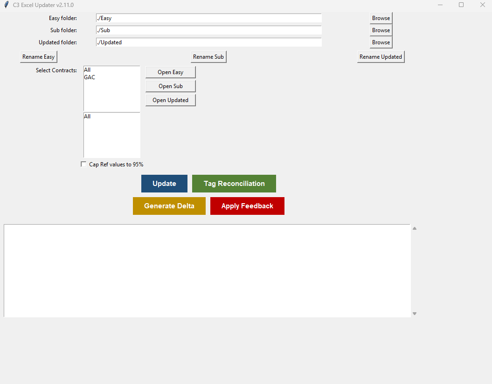

A live weekly workflow for reconciling subcontractor C3 progress submissions against project progress reference data, including EasyPlant exports. The workflow routes exceptions, confirms deltas, and prepares controlled reporting outputs.

Weekly progress updates required manual comparison between subcontractor C3 forms and project progress reference exports, including EasyPlant exports. The process was slow and exposed to missing tags, duplicate tags, NA changes, unclear deltas, and inconsistent feedback.
The workflow creates a repeatable sequence for comparison, exception handling, stakeholder review, correction capture, and reporting preparation before data moves downstream.
The workflow connects source files, validation checks, stakeholder review, and reporting outputs in one weekly operating pattern.
Weekly C3 files arrive from subcontractors by contract and WorkClass scope.
Submissions are compared against project C3 reference exports, including EasyPlant data, by tag, sheet, WorkClass, SubWorkClass, and progress step.
Missing tags, duplicates, NA events, increases, decreases, and invalid step patterns are separated for review.
NA events, delta increases, and progress logic issues are routed to the right stakeholder before reporting close.
Approved corrections are applied back into working files, with outputs ready for project-system update preparation and weekly reporting.
Working files prepared after comparison of project progress reference data and subcontractor submissions.
Separate report for Quality review and controlled downstream handling.
Missing, duplicate, Easy-only, Sub-only, and to-be-added tag positions surfaced before close.
Full delta for Progress Team and increase-only delta for Construction Team confirmation.
Approved corrected values applied back into the working dataset with visual traceability.
Cleaner weekly inputs for management reporting and project progress review.
The workflow demonstrates recurring project data validation, exception handling, stakeholder review, and controlled reporting preparation across subcontractor submissions and project progress reference data, including EasyPlant exports.
It shifts weekly work from manual line-by-line comparison toward exception-based review, correction tracking, and repeatable project data governance.
Guardrail: the workflow supports project-system update preparation, including EasyPlant update preparation, and reporting-data control; it is not positioned as direct database write-back.